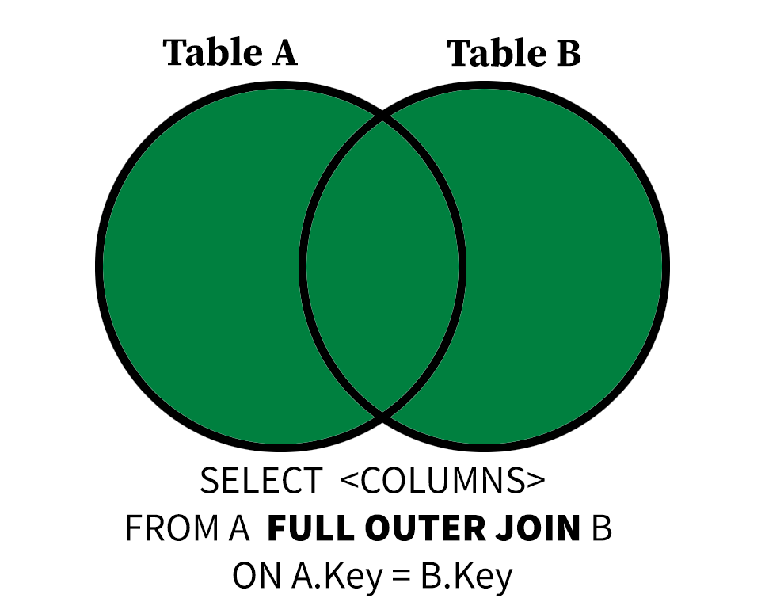
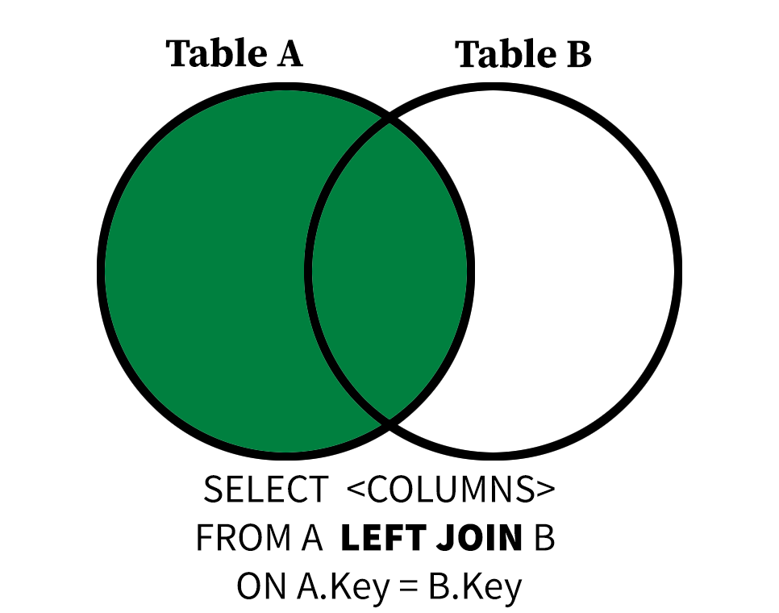
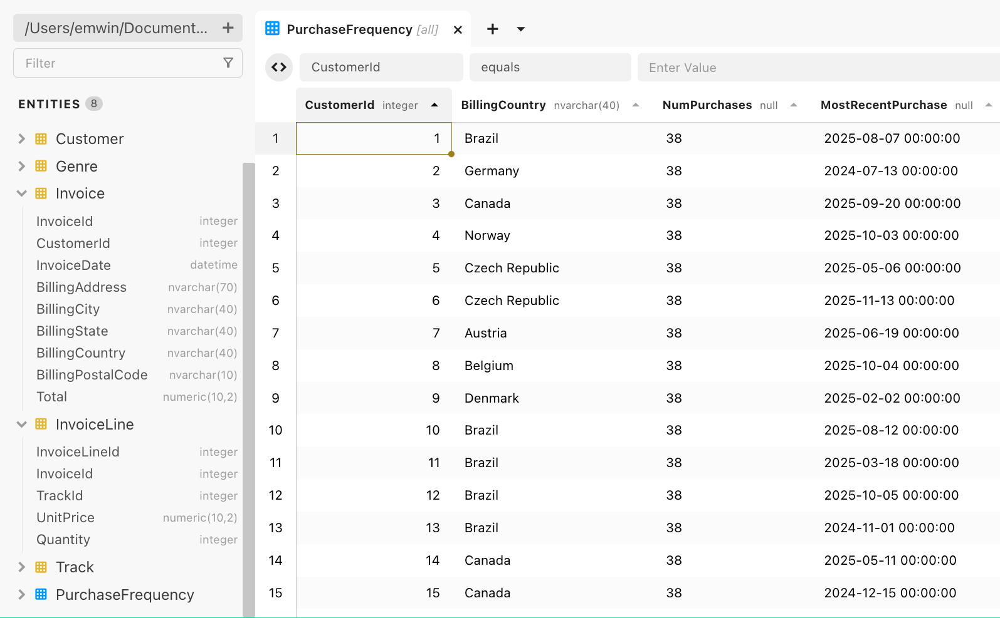

Using Joins
Refresher: Joining with INNER JOIN
In our last lesson, you were introduced to the JOIN or INNER JOIN operation, which, given a match between columns expressed in ON TABLE1.col1 = TABLE2.col2 form, allows you to create a new result with a row corresponding to each pair of matching values between the two tables.
Joins are typically performed between fields that are linked by a primary key/foreign key relationship. This allows us to ask complex questions about the same objects, people, or records by aggregating or concatenating information distributed across multiple tables.
GROUP BY and Joins
We can use GROUP BY and HAVING clauses with joined tables. Just like with SELECT, using table.field form in the GROUP BY clause is sometimes necessary to avoid ambiguity.
The following query computes the five most popular genres of Track in the database by joining the Genre and Track tables and counting the number of tracks per genre with COUNT. Then, these groups are sorted by the number of tracks per genre or NumTracks.
SELECT Genre.Name, COUNT(DISTINCT TrackId) as NumTracks
FROM Genre INNER JOIN Track
ON Track.GenreId = Genre.GenreId
GROUP BY Genre.Name
ORDER BY NumTracks DESC
LIMIT 5;| Name | NumTracks |
|---|---|
| Rock | 1297 |
| Latin | 579 |
| Metal | 374 |
| Alternative & Punk | 332 |
| Jazz | 130 |
Observe that Genre.Name is used in the GROUP BY clause rather than Name because both Genre and Track have a field named Name.
Quiz: JOIN and GROUP BY
Write a query that finds the CustomerId, FirstName and LastName of the 3 customers who spent the most money (sum of Total) by joining the Invoice and Customer tables on CustomerId.
SELECT Customer.CustomerId, FirstName, LastName, -----
FROM Customer INNER JOIN ----- ON ------ = ---------
GROUP BY Customer.CustomerId, FirstName, LastName
ORDER BY ------ ------
LIMIT 3;SELECT Customer.CustomerId, FirstName, LastName, SUM(Total)
FROM Customer INNER JOIN Invoice
ON Customer.CustomerId = Invoice.CustomerId
GROUP BY Customer.CustomerId, FirstName, LastName
ORDER BY SUM(Total) DESC
LIMIT 3;| CustomerId | FirstName | LastName | SUM(Total) |
|---|---|---|---|
| 6 | Helena | Holý | 49.62 |
| 26 | Richard | Cunningham | 47.62 |
| 57 | Luis | Rojas | 46.62 |
Joins Gone Wrong: Joining Against Arbitrary Fields
Just because two fields in two database tables share the same name doesn’t mean they are good candidates for joins. Foreign key relationships make for good joins because you can make guarantees about the shape and cardinality (the number of rows) in your results. Remember, primary keys correspond to at most one row in their respective tables.
What happens if we do an arbitrary many-to-many join? Let’s take UnitPrice as it appears in Track and UnitPrice as it appears in InvoiceLine. These both correspond to the price of a song or television episode from the Track table.
SELECT Track.Name, InvoiceLine.UnitPrice
FROM InvoiceLine INNER JOIN Track ON Track.UnitPrice = InvoiceLine.UnitPrice
ORDER BY Track.Name;This query produces an enormous result! Because many rows in Track have the same UnitPrice (0.99) and many rows in InvoiceLine have the same UnitPrice (0.99), it produces a result with 7028053 rows.
Other Joins: FULL OUTER JOIN and LEFT JOIN
As stated above, INNER JOIN operations ignore tuples that have null values in the column used to join tables in either of the tables being joined. This isn’t always desirable, especially when the absence of a certain foreign key in a table is meaningful.

TheFULL OUTER JOIN operation includes input tuples “padded” with NULL values if either side of the join has unmatched tuples. This means every row in each of the tables in a FULL OUTER JOIN is included at least once in the output.
Let’s inspect the InvoiceLine and Track tables to see this difference. Each InvoiceLine has a non-null TrackId, but not every Track in the Track table has been purchased. How do we know?
This INNER JOIN has 2240 results, even though the Track table has 3503 rows. This is because tracks that have do not have corresponding rows in InvoiceLine do not appear in the results.
SELECT Track.TrackId, InvoiceLineId
FROM Track INNER JOIN InvoiceLine ON Track.TrackId = InvoiceLine.TrackId;If it was important that every track (and every invoice line) be included in the results, then we could use a FULL OUTER JOIN instead, which returns 3759 rows. This is because some tracks have been purchased twice, while others have never been purchased.
SELECT Track.TrackId, InvoiceLineId
FROM Track FULL OUTER JOIN InvoiceLine ON Track.TrackId = InvoiceLine.TrackId;We can then apply grouping to this join to learn more about the distribution of track purchases.
SELECT Track.TrackId, COUNT(DISTINCT InvoiceLineId) as NumPurchases
FROM Track FULL OUTER JOIN InvoiceLine ON Track.TrackId = InvoiceLine.TrackId
GROUP BY Track.TrackId;| TrackId | NumPurchases |
|---|---|
| 1 | 1 |
| 2 | 2 |
| 3 | 1 |
| 4 | 1 |
| 5 | 1 |
…
By restricting this query to groups (invoice lines grouped by track) with no known purchases with the HAVING clause, we can see that 1519 tracks in the database have never been purchased.
SELECT Track.TrackId, COUNT(DISTINCT InvoiceLineId) as NumPurchases
FROM Track FULL OUTER JOIN InvoiceLine ON Track.TrackId = InvoiceLine.TrackId
GROUP BY Track.TrackId
HAVING NumPurchases=0;| TrackId | NumPurchases |
|---|---|
| 7 | 0 |
| 11 | 0 |
| 17 | 0 |
| 18 | 0 |
| 22 | 0 |
…
Quiz: FULL OUTER JOIN vs. INNER JOIN
If we switch the FULL OUTER JOIN to an INNER JOIN in the query above, what will happen to our results?
LEFT JOIN Briefly Explained
The order in which you state A INNER JOIN B or A FULL OUTER JOIN B doesn’t matter, but that changes with the LEFT JOIN operation. The LEFT JOIN operation considers the first table the “left” side of the join and the second the “right” side.

The LEFT JOIN operation includes input tuples “padded” with NULL values on the “right” if any tuples on the left have no matches. This means every row in the table of the left side of a LEFT JOIN is included at least once in the output.
In this example query, you can see that every TrackId and Name from the Track table on the left side of the join appears at least once.
SELECT Track.TrackId, Track.Name, InvoiceLineId
FROM Track LEFT JOIN InvoiceLine ON Track.TrackId = InvoiceLine.TrackId
ORDER BY Track.TrackId
LIMIT 15;| TrackId | Name | InvoiceLineId |
|---|---|---|
| 1 | For Those About To Rock (We Salute You) | 579 |
| 2 | Balls to the Wall | 1 |
| 2 | Balls to the Wall | 1154 |
| 3 | Fast As a Shark | 1728 |
| 4 | Restless and Wild | 2 |
| 5 | Princess of the Dawn | 580 |
| 6 | Put The Finger On You | 3 |
| 7 | Let’s Get It Up | null |
| 8 | Inject The Venom | 4 |
| 8 | Inject The Venom | 1155 |
| 9 | Snowballed | 581 |
| 9 | Snowballed | 1729 |
| 10 | Evil Walks | 5 |
| 11 | C.O.D. | null |
| 12 | Breaking The Rules | 6 |
- Just like in an
INNER JOIN, if a value, in this caseTrackIdhas multiple matches, then each match will appear as a row in the result of the join. - Observe that the rows for
TrackId=7andTrackId=11have anInvoiceLineIdofNULLbecause there are no purchases of those track in theInvoiceLinetable.
We can adjust our purchase count query above using a LEFT JOIN operator to find the purchase counts for the first five tracks in the database in alphabetical order.
SELECT Track.TrackId, Track.Name, COUNT(DISTINCT InvoiceLineId) as NumPurchases
FROM Track LEFT JOIN InvoiceLine ON Track.TrackId = InvoiceLine.TrackId
GROUP BY Track.TrackId, Track.Name
ORDER BY Track.Name
LIMIT 5;| TrackId | Name | NumPurchases |
|---|---|---|
| 3027 | “40” | 0 |
| 2918 | “?” | 1 |
| 3412 | “Eine Kleine Nachtmusik” Serenade In G, K. 525: I. Allegro | 0 |
| 109 | #1 Zero | 0 |
| 3254 | #9 Dream | 1 |
A Note On Join Types
If every non-null value of A.key is present in B and vice-versa, then an INNER JOIN is equivalent to FULL OUTER JOIN and LEFT JOIN. Observe how the two queries below have the same number of results.
SELECT Invoice.InvoiceId, Invoice.CustomerId, InvoiceLine.InvoiceLineId
FROM Invoice FULL OUTER JOIN InvoiceLine
ON Invoice.InvoiceId = InvoiceLine.InvoiceId;SELECT Invoice.InvoiceId, Invoice.CustomerId, InvoiceLine.InvoiceLineId
FROM Invoice INNER JOIN InvoiceLine
ON Invoice.InvoiceId = InvoiceLine.InvoiceId;There is a RIGHT JOIN counterpart to LEFT JOIN, but it’s rarely used because RIGHT JOIN operations can always be expressed as LEFT JOIN operations with the order of the tables inverted. In fact, early versions of SQLite didn’t even have a RIGHT JOIN keyword.
Quiz: Practice with LEFT JOIN
Write a query that finds the number of InvoiceId, Total and the number of unique InvoiceLineId values per InvoiceId in Invoice using a LEFT JOIN operation. Use the template below to get started.
SELECT _______.InvoiceId, ________,
COUNT(________) AS Lines
FROM Invoice LEFT JOIN InvoiceLine
ON ______._______ = _______.______
GROUP BY _______._______
ORDER BY Lines ASC;- Are there any
InvoiceIdvalues inInvoicewithout at least one correspondingInvoiceLineinInvoiceLine? How do you know?
SELECT Invoice.InvoiceId, Invoice.Total,
COUNT(InvoiceLine.InvoiceLineId) AS Lines
FROM Invoice LEFT JOIN InvoiceLine
ON Invoice.InvoiceId = InvoiceLine.InvoiceId
GROUP BY Invoice.InvoiceId
ORDER BY Lines ASC
LIMIT 5;| InvoiceId | Total | Lines |
|---|---|---|
| 6 | 0.99 | 1 |
| 13 | 0.99 | 1 |
| 20 | 0.99 | 1 |
| 27 | 0.99 | 1 |
| 34 | 0.99 | 1 |
No. If there were any rows in Invoice without at least one corresponding purchase line in InvoiceLine, your LEFT JOIN would have surfaced InvoiceId values where Lines would be equal to 0.
Joining Three or More Tables
You can join three or more tables in the same FROM clause, but you need to be careful to specify what you are joining on for each JOIN.
The following query joins three tables, Customer, Invoice, and InvoiceLine, groups the resulting joined rows by CustomerId, then aggregates to find the number of purchased tracks and the most recent purchase of each customer.
SELECT Customer.CustomerId, COUNT(DISTINCT InvoiceLineId) as NumPurchases,
MAX(InvoiceDate) AS MostRecentPurchase
FROM Customer
INNER JOIN Invoice ON Customer.CustomerId = Invoice.CustomerId
INNER JOIN InvoiceLine ON Invoice.InvoiceId = InvoiceLine.InvoiceId
GROUP BY Customer.CustomerId
ORDER BY MostRecentPurchase DESC
LIMIT 5;| CustomerId | NumPurchases | MostRecentPurchase |
|---|---|---|
| 58 | 38 | 2025-12-22 00:00:00 |
| 44 | 38 | 2025-12-14 00:00:00 |
| 35 | 38 | 2025-12-09 00:00:00 |
| 29 | 38 | 2025-12-06 00:00:00 |
| 25 | 38 | 2025-12-05 00:00:00 |
Quiz: Big Joins
Some albums have many different composer credits! Find the 5 albums in the database (and the musical artists responsible for them) with the greatest number of distinct composer attributions by joining the Artist, Album and Track tables. Remember, all the composer information varies on a Track by Track basis. INNER JOIN operations are appropriate here.
SELECT Album.AlbumId, Album.Title, Artist.Name, COUNT(DISTINCT -------) as NumComposerCredits
FROM Artist
INNER JOIN Album ON Album.ArtistId = Artist.ArtistId
INNER JOIN ----- ON ------ = -------
GROUP BY -------
ORDER BY NumComposerCredits DESC
LIMIT 5;SELECT Album.AlbumId, Album.Title, Artist.Name, COUNT(DISTINCT Composer) as NumComposerCredits
FROM Artist
INNER JOIN Album ON Album.ArtistId = Artist.ArtistId
INNER JOIN Track on Track.AlbumId = Album.AlbumId
GROUP BY Album.AlbumId, Album.Title, Artist.Name
ORDER BY NumComposerCredits DESC
LIMIT 5;| AlbumId | Title | Name | NumComposerCredits |
|---|---|---|---|
| 141 | Greatest Hits | Lenny Kravitz | 22 |
| 83 | My Way: The Best Of Frank Sinatra [Disc 1] | Frank Sinatra | 21 |
| 248 | Ao Vivo [IMPORT] | Zeca Pagodinho | 19 |
| 115 | Sex Machine | James Brown | 16 |
| 33 | Chill: Brazil (Disc 1) | Marcos Valle | 16 |
Saving Complex Queries as Views
You’re now writing complex queries that would take you time to rewrite. Joining three or more tables can be painstaking, and it’s not uncommon to run the same report on a regular basis.
A VIEW is a (virtual) table that is populated every time you query it. Any SQL query can be made into a VIEW, but the feature is typically used for complex queries or analyses.
CREATE VIEW BigPurchases AS
SELECT Customer.CustomerId, Invoice.BillingCountry, COUNT(DISTINCT TrackID) as NumPurchases,
MAX(InvoiceDate) AS MostRecentPurchase
FROM Customer
INNER JOIN Invoice ON Customer.CustomerId = Invoice.CustomerId
INNER JOIN InvoiceLine ON Invoice.InvoiceId = InvoiceLine.InvoiceId
GROUP BY Customer.CustomerId, Invoice.BillingCountry
ORDER BY MostRecentPurchase DESC;
Click on the left Entities to see your new view in Beekeeper Studio. This view is saved to your database, so it is available to you each time you open Beekeeper Studio.
To remove a view, right-click the view and click Drop.
Inserting and Updating Values
Let’s say we want to add 'Dolly Parton' to our Artist table. There are exactly 275 rows, with the primary key ArtistId numbered from 1 to 275. That means our next ArtistId should be 276.
INSERT INTO Artist (ArtistId, Name)
VALUES (276, 'Dolly Parton');Query 1/1. No results. 1 rows affected.Inspect the Artist table in the Beekeeper Studio browsing interface. You should see your new row. Keep in mind that you cannot update existing rows with an INSERT statement and that no two rows can have the same primary key.
To update an existing row, use the UPDATE and SET keywords. Be very careful to restrict which rows you update by using a WHERE clause to avoiding changing all rows in the table.
UPDATE Artist
SET Name = 'Dolly Parton'
WHERE ArtistId = 276;Query 1/1. No results. 1 rows affected.Quiz: Inserting New Rows
Write a query that adds Dolly Parton’s album The Grass is Blue to the Album table. Remember that Parton’s ArtistId is 276. The next available AlbumId is 348.
INSERT INTO Album (_____, ____,_____)
VALUES (348, _______ , __________);INSERT INTO Album (AlbumId, Title, ArtistId)
VALUES (348, 'The Grass is Blue', 276);
SELECT * FROM Album
WHERE AlbumId = 348;| AlbumId | Title | ArtistId |
|---|---|---|
| 348 | The Grass is Blue | 276 |
Insertion and Constraints
You cannot violate constraints on values and relationships within a SQL database when inserting or updating values. For example, because ArtistId must be an integer, we cannot insert a row with ArtistId ABCDE because ABCDE is of the wrong data type.
INSERT INTO Artist (ArtistId, Name)
VALUES ('ABCDE', 'Dolly Parton');datatype mismatchSimilarly, we cannot violate primary key/foreign key relationships encoded in the database. For example, because ArtistId is a foreign key in the Album table, we cannot insert albums with ArtistId values not in the Artist table.
INSERT INTO Album (AlbumId, Title, ArtistId)
VALUES (350, 'Fake Album', 10000);FOREIGN Key constraint failedThis is a feature, not a bug! Database constraints exist to protect data from human error.
SQL Best Practices
- Don’t make assumptions about the structure of your database: you can always check by manually inspecting primary key and foreign keys, data types, and constraints.
- Know which columns can take on
NULLvalues. - Don’t default to
INNER JOINoperations if the absence of a match is important. - Avoid using complicated subqueries: if you find yourself nesting queries within queries, there may be a better and faster way to compute the information you want through a join or through creating a view.
Thank You for Joining
Thank you so much for participating in this workshop series! If you would like to learn more, I would encourage you to continue your SQL journey by looking through our recommended additional resources.